The 3D Serve: Upward Swing Part 1¶
Dr. Brian Gordon
In my previous articles we've looked at the windup (Click here) and the backswing (Click here) from a three dimensional, quantitative perspective. We've seen there are many possible ways to organize the motions of individual body segments in the service motion.(Click Here)

Let's start our analysis of the complexities in the upward swing.
Players who want to improve their serves have to understand these options, and consider them in the context of their physical capabilities. Now, in the next two articles, let's take the same approach and explore the options in our investigation of the upward swing. We'll start in this article by seeing how the conditions of the trunk are critical for setting up certain elements of the upward motion.
As in the previous articles, we'll use 3D data for a high level junior player to provide examples of how the various segments interact. Developmental coaches should take special note of this data, as this junior exhibits issues that are almost universal in the development of the serve. My belief is that these issues should be addressed in coaching as early as possible.
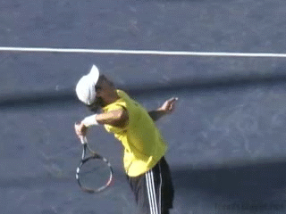
Blinding acceleration gaining 70mph in a fraction of a second.
We've already seen that defining the options in the motion becomes more difficult as the speed of the motion increases, for example, when we moved from the windup to the backswing. When we try to analyze the upward path of the arm and racket this difficulty becomes even greater.
The primary is reason is that as we move into this phase the body segments achieve amazing speeds. For example, in just 1/10 of a second, the center of the racquet face can gain 70 MPH as it moves toward the contact.
Conditions at the End of the Backswing
We've covered a lot of complex ground in the previous articles, so before we start on the upward swing, let's review where we are in the motion at the end of the backswing. We'll start with the legs, then look at the trunk.
We'll also add some further analysis about the role of the trunk in the backswing as it relates to the upper swing. The trunk is what I call "The Momentum Super Highway." Its position and the way it moves during the upward swing are critical for creating the correct racket path and maximizing racket speed.
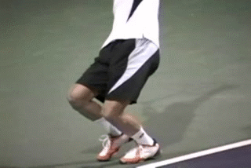
Once the legs leave the ground, a finite amount of momentum moves up the chain.
Starting with the legs, we see that the knees have fully extended. The leg drive is therefore complete, and the body has been driven or pushed upward into the air.
Since the feet have lost contact with the ground, this means that the legs can generate no further force from the ground. This means that angular momentum can neither increase or decrease, and is now constant around all axes of the body. How this finite amount of momentum moves through the kinetic chain is critical for the rest of the motion.
The Trunk
At the end of the backswing, the trunk has also gone through a complex series of motions. These motions have been the driving force in the racquet drop.
The first motion is the natural elevation of the trunk as the leg drive pushes the whole body up in the air.
The second is the backward bending of the spine, which we also called trunk extension.
The third movement is the sideways or lateral bending of the spine, called the cartwheel effect.
Finally, we have the twisting of both the hips and shoulders or the upper and lower trunk.
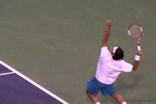
Shoulder elevation, cartwheeling, and trunk twist--all parts of the backswing.
The net effect of all these motions is that the trunk is tilted sideways to the left when viewed from a back view. The hips and shoulders are roughly aligned with each other when viewed from overhead. This alignment occurs at roughly 60 degrees away from the baseline.
The Hitting Arm
In the previous article we also saw that during the backswing, the dominant hitting arm motion was external rotation of the upper arm. This motion, combined with the elevation of the upper arm at the shoulder, are the factors that are most responsible for the depth of the racket drop. The depth of the racket drop is important because it dictates the available range of motion during the upward swing for developing racket head speed.
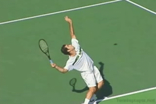
Internal rotation; the dominant arm motion in the backswing.
The Upward Swing Goals
Simply put, the performance goal of the upward swing is to generate as much racquet speed as possible. The companion goals are to contact the ball at the greatest height with the racquet face traveling on the optimal path for the desired shot direction.
The velocity (speed and direction) of the racquet face is the sum of the rotations of the joints of the body, considering the joint's proximity to the racquet face. Elbow extension, for example, can cause the racquet face to move -- the velocity of the movement being determined by the rate of the elbow extension and the elbow's location in relation to the racquet face.
With 3D analysis, it is possible to determine how the action of each joint contributes to the speed of the racquet. These contributions have been discussed in a previous article on this site and elsewhere. (Click Here.) They provide great insight into how racquet speed is developed in the upward swing, as we'll see below.
It is important to understand, however, that the joint rotations and their contributions to racquet speed do not occur on their own. Instead they are effects of complex kinetic interactions. It is not my intention to unravel this kinetic puzzle in this article because this has never been accomplished. Instead, the goal is to investigate pieces of the puzzle that relate to actionable performance issues.
The Trunk--Momentum Super Highway
At the highest level, the kinetic fuel that produces racquet head speed is angular momentum. To generate a large amount of racquet speed at contact, you must generate a large amount of angular momentum in the hand/racquet.
The most important component for racquet speed is forward angular momentum. This momentum is first acquired by pushing on the ground with the legs. Then it must accumulate in the trunk where it can be transferred to the hitting arm, and then on to the racket. So the trunk is a major hub in the transfer highway.
To understand the flow of forward angular momentum into and out of the trunk, we must briefly revisit the backswing.

The cartwheel sets up the momentum transfer to the trunk.
The "Cartwheel" and Shoulder Motion
The critical portion of the forward angular momentum transfer into the trunk occurs during the backswing. This transfer is through the so-called cartwheel motion of the trunk. The backward lean at the end of the windup (seen in a side view) sets up this transfer. This is the so-called "archer's bow". It is an attribute shared by all high level servers, but one that many younger players are slow to develop.
The momentum transfer from the legs to the trunk begins early in the backswing. This is caused by the contraction of muscles on the outside of the front hip and in the trunk combined with some push from the back leg. These actions cause the momentum to be redistributed from the legs to the trunk. The trunk then straightens into alignment with the legs during the cartwheel.
The transfer to the hitting arm starts later in the backswing and continues into the early upward swing. The transfer is accomplished through muscular activity causing motion at the shoulder joint. The motion starts as an upward movement of the upper arm (abduction), later combined with a forward movement of the upward arm (horizontal adduction).
And here is our first important coaching implication for junior players. These two key factors--the cartwheel action of the trunk early in the backswing and the shoulder joint motion at a later stage--are often limited in the service motions of young juniors.

Shoulder abduction; the movement of the upper arm upward and forward.
My research indicates that at the start of the upward swing, high level servers have used the cartwheel and shoulder joint motion to transfer around 75% of their total forward angular momentum into the upper body (trunk and arm).
But if we look at the 3D data in user interface for our junior player, we see he has transferred only a little over 50 percent of his total forward angular momentum to the upper body at the same point in the motion.(To see this start by selecting "Angular Momentum" from the "Data Options" menu, then scroll down though the table values 3 lines.)
That is a huge difference and therefore a major problem. My coaching experience shows that until this problem is resolved, players can not make further substantive improvement in the serve. But to resolve the problem, you must understand whether the deficiency in the momentum transfer is the transfer into the trunk (cartwheel), or into the arm (shoulder abduction), or both.
In the case of the junior player, the answer is both. But if you don't happen to have 3D technology on hand to measure angular momentum, how can you detect this problem? A good indicator of the potential momentum transfer into the trunk is the backward lean of the trunk at the end of the windup.
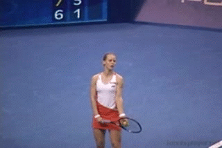
Little backward lean means little momentum transfer.
Our example player has a small angle of about 5-6 degrees. This compares to a target value of 30 degrees for the high performance servers in our data base. (We can see this by selecting "Segment/Joint Angles" in the "Data Options" and scrolling down to backward lean of the trunk at the end of the wind up). This small angle indicates that the potential for trunk cartwheel is low, and because of this, it is likely that the forward angular momentum transfer into the trunk will be insufficient.
As for the shoulder joint motion (upward and forward upper arm movement) and associated angular momentum transfer into the arm, young and inexperienced players will almost always lack the strength or technique to lift the upper arm at the shoulder joint. So while I always verify with 3-D data the extent of the problem, I systematically start strength work on exercises that mimic this arm position and motion. (More on my views on the strength training aspect in a future series of articles.)
Unless this deficiency in the shoulder motion in the early upward swing is addressed, the body will devise its own solution. It's not a great solution, unfortunately. This solution is to replace shoulder motion with elbow extension as the source of racket speed early in the upward motion. This dissipates the contribution of the elbow extension too soon and causes irregularity in racquet speed development later in the motion. The player loses racket acceleration at the point where the elbow extension should be contributing, but now cannot. And this problem can be very difficult to correct.
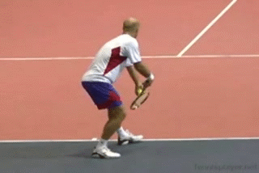
During the backswing, the lateral tilt increases to various degrees.
Trunk Motion in Upward Swing
Sufficient transfer of momentum into the trunk through the cartwheel action means that the trunk will rotate during the upward swing in a way that is advantageous to motion of the hitting arm. Particularly this rotation is the shoulder joint.
But understanding how the trunk moves during the upward swing, and more importantly why, is a daunting task. This is complicated by the wide variation in pattern at all levels of play. Much of the variation depends on how much lateral trunk tilt a given player has in his motion. (Remember that lateral trunk tilt is the angle the trunk is tilted to the left when seen in a back view).
As I indicated in the earlier review of backswing positions, the trunk enters the backswing with at least some lateral tilt due to the bend of the knees at the end of the wind up. The tilt then continues to increase to varying degrees. This amount of additional tilt is related to the amount of lateral angular momentum generated by the leg drive. But another factor affecting the source of the tilt is the progression of hip rotation. This is in turn affected by the nature of the stance.
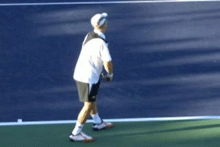
What is the function or value of more extreme tilt?
The bottom line is that some lateral tilt is optimum, but too much is detrimental. Why is the amount of the tilt so important? The reason is that it affects how the player can position the arm and racket at contact when he executes the upward swing.
With junior players this tilt is frequently excessive. It can already have gone too far by the completion of the windup. But it can increase even further in the backswing phase and also in the upward swing.
For our junior player, the tilt at the end of the wind up is already 67 degrees. (To see this in our junior player, select "Segment/Joint Angles" from the "Data Options" menu. Scroll through the table lines to lateral tilt at the end of the wind up.)
At the end of the backswing the tilt has reached 54 degrees, and by contact the angle is 49 degrees. (These are all measured from a line parallel to the baseline.) That's far too much. But to give you an idea of the pervasive nature of this problem I've measured angles at contact that are less than 40 degrees in several other junior players.
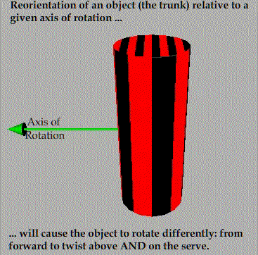
Tilting the torso increase rotation with angular momentum as a constant.
So why do these junior players tilt this much? As I said, the body tends to find its own solutions. Many young players cannot create enough forward angular momentum, or transfer it to the trunk sufficiently with the cartwheel. Their solution is to compensate with excessive trunk tilt.
Why do junior players tend to do this naturally? It may have other negative effects, but tilting the trunk laterally will allow the player to significantly increase the speed at which the trunk rotates. This is a way to directly or indirectly gain racket speed. But it is not the optimum way, and it may create long term limitations in the motions of young players.
Why does more tilt increase trunk rotation speed? The animation illustrates this concept. When the trunk is upright it rotates slowly forward -- however, when on its side, the rate of rotation increases drastically even when fueled by the same amount of angular momentum. It's similar to the way an ice skater can increase the speed of a spin by pulling her arms in closer to the body.
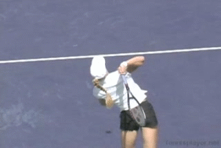
Tilt affects the hitting arm configuration at the contact.
This action makes a lot of sense for a junior player (or any player) who lacks the leg drive to generate great forward angular momentum. By manipulating the trunk tilt, the server can maximize the segment rotation speed even with a lack of momentum. But as I said it is far from the ideal solution.
Hitting Arm and Racket at Contact -- Cart Before Horse?
When the players use trunk tilt to increase the speed of the trunk rotation how does it limit the rest of the motion? The answer is that excessive trunk tilt affects how the player can position his arm and racket at contact.
To see this, let's compare the configuration of the trunk and hitting arm at contact for our group of elite servers with the less preferable options.
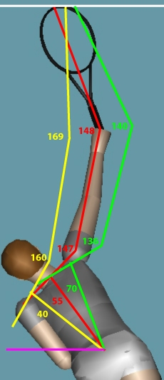
3 variations in the angle of tilt angle, and how they affect the angles of the arm and racket.
The graphic shows three possible configurations. Look at the red lines first. The red lines show the alignment of the trunk and hitting arm at contact for our elite college servers. (The white line at the top shows the height of the racquet tip defined by this body and these joint positions.)
Note in the red lines that the trunk tilt is about 55 degrees from the left horizontal. This tilt is combined with a shoulder joint angle of 147 degrees. This is the line of the shoulders to arm. Finally, the angle between the extended arm and the racquet for the elite servers is 148 degrees.
Now look at the yellow lines. The yellow lines show how increasing the trunk tilt changes the other critical angles with the same contact height. The angle of the trunk tilt is now 40 degrees, the extreme version of what I have actually measured with junior players. This configuration shows the common tendency we see in so many developing players.
You can see how this change in the angle of the trunk tilt affects the other angles. The hitting arm in the yellow lines is now at a 160 degree angle to the shoulder line. The angle between the arm and the racket has increased as well to 169 degrees.
The changes in these angles have performance outcome consequences, and small changes can have big impact. And the choice could not be more important.
To see how these angles affect performance outcomes, let's take a look at our previous work on the contributions of joint rotations to racket speed. The contributions to pre-contact racquet speed for the elite servers are shown in the table. Note that 23 percent of racket head speed prior to contact comes from the combination of Shoulder Internal Rotation and Forearm Pronation. Compare that to the contribution of Upper Trunk Twist or rotation at 13 percent.
Remember that by tilting the trunk, greater trunk twist rotation speed can be achieved with relatively low forward angular momentum. It follows that this greater trunk twist rotation will contribute more to racquet speed near contact.
Contributions Just Prior to Contact:
Elbow Extension: 35 percent
Wrist Flexion: 24 percent
Shoulder Internal Rotation 17 percent
Upper Trunk Twist: 13 percent
Forearm Pronation: 6 percent
Also, when players tilt more, the increased speed of upper trunk twist rotation, combined with better alignment of the upper arm with the line of the shoulders reduces the role of the shoulder joint in creating racquet speed. This is because much of the upper arm motion can be obtained directly from the trunk motion, with less need for independent shoulder joint action.
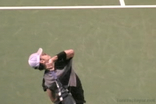
The angle of the arm to the racket affects the amount of internal rotation and pronation.
This is the approach used by our junior player: extensive trunk tilt combined with a changed alignment of the arm to the line of the shoulders. His trunk tilt was 49 degrees contact. He couples this with a 159 degree shoulder joint angle. (To see the data, scroll through the "Segment/Joint Angles".)
The impact of Shoulder Internal Rotation and Pronation—two major contributors—is reduced, on the other hand, with the larger angles between the arm and racquet we see with our junior players who tilt a lot. The contribution can, however, be increased when that angle is smaller. In fact, the smaller this angle, the better.But a smaller angle between the arm and racquet is possible only in less tilted configurations. A more favorable value for this angle (148 degrees) is seen in red for our elite college servers. We can see the same effect in the green lines which show less tilt and an even smaller angle. In the green lines, the angle of the trunk tilt is 70 degrees. This reduces the angle between the arm and the racket to 140 degrees.
So to summarize, more tilted configurations favor trunk twist rotation, elbow extension, and wrist flexion as the main contributors, largely at the expense of shoulder internal rotation and pronation. Less tilted configurations increase the role of shoulder internal rotation and pronation.
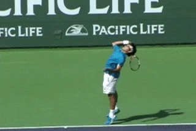
Less tilted configuration increase the contribution of internal rotation and pronation.
The bottom line is that the lateral trunk tilt dictates the organization of the joint rotations in creating racquet speed. Excessive trunk tilt, may help with the contribution of one segment--upper trunk twist rotation--but this is at the expense of other critical contributors around the contact--internal shoulder rotation and, to a lesser extent, forearm pronation.
In every server's motion there is a balance of many complex factors. Definitely there are a range of options that can produce effective results. The problems occur when one or another factor becomes too extreme at a certain point in the motion. This is the issue at the start of the upward swing with the angle of trunk tilt.
If there is too much tilt, the resulting trade off is not advantageous for servers looking to maximize racket speed and the efficiency of their motions. This is why we work towards intermediate tilt angles of 55 -- 65 degrees at contact at our training centers, somewhere in the range between the red and the green lines in the diagram.
Now that we understand how the trunk is critical in conveying momentum to the hitting arm and racket, let's look at the rest of the upward motion in more detail in the next article!

Dr. Brian Gordon has changed the understanding of the biomechanics of high level tennis technique. His Biomechanically Engineered Stroke Technique (BEST) is the only empirically based stroke mechanics system in the world, growing from three decades of both academic and applied on court research. He is a founder of the Tennis Center for Performance Research in Miami, Florida, which is creating a new paradigm for player development. The center has assembled an unprecedented group of specialists with cutting edge knowledge across the entire range of tennis performance.
To visit his website, Click Here!
Top contact him directly, Click Here!